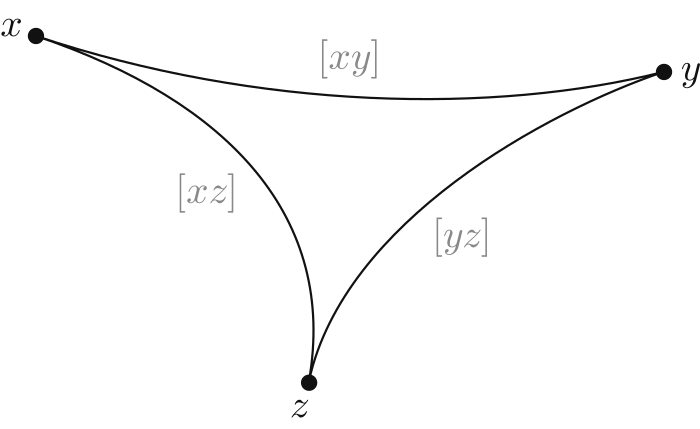
a geodesic triangle \(\boldsymbol{xyz}\) in \(\Gamma\) consists of three points with geodesic paths \([xy]\), \([yz]\), and \([xz]\)
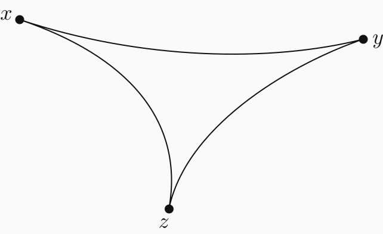
\( d_{\color{#386ef6}x} := \dfrac{d({\color{#386ef6}x},y) + d({\color{#386ef6}x},z) - d(y,z)}{2} \)
\( d_{\color{#b73ce7}y} := \dfrac{d({\color{#b73ce7}y},x) + d({\color{#b73ce7}y},z) - d(x,z)}{2} \)
\( d_{\color{#00a597}z} := \dfrac{d({\color{#00a597}z},y) + d({\color{#00a597}z},x) - d(x,y)}{2} \)
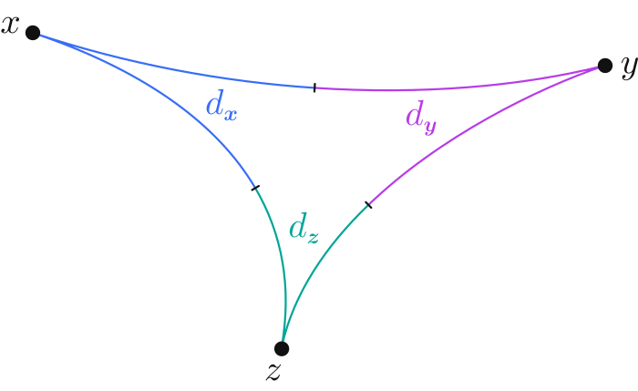
\( d_{\color{#386ef6}x} := \dfrac{d({\color{#386ef6}x},y) + d({\color{#386ef6}x},z) - d(y,z)}{2} \)
\( d_{\color{#b73ce7}y} := \dfrac{d({\color{#b73ce7}y},x) + d({\color{#b73ce7}y},z) - d(x,z)}{2} \)
\( d_{\color{#00a597}z} := \dfrac{d({\color{#00a597}z},y) + d({\color{#00a597}z},x) - d(x,y)}{2} \)
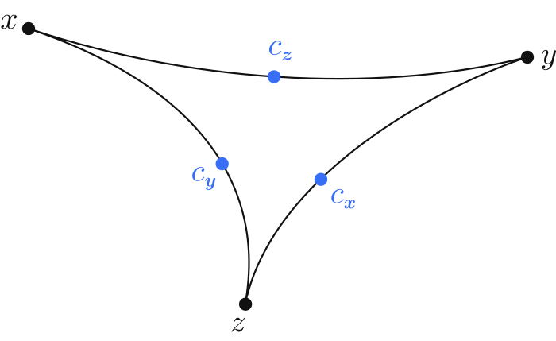
an interior point is geodesically equidistant from the corners, defined as:
\(d(c_x, y) = d_y\) and \(d(c_x,z) = d_z\)
\(d(c_y, x) = d_x\) and \(d(c_y,z) = d_z\)
\(d(c_z, x) = d_x\) and \(d(c_z,y) = d_y\)
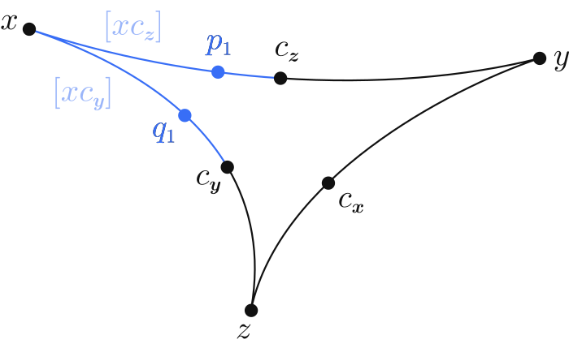
two points on a path \([ab]\) are corresponding if they are equidistant from \(a\)
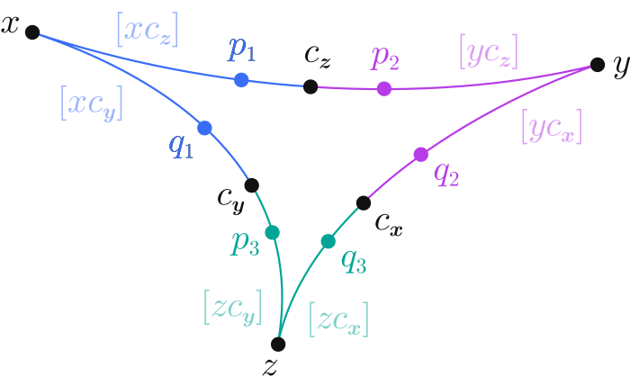
two points on a path \([ab]\) are corresponding if they are equidistant from \(a\)
a triangle is \(\boldsymbol{\delta}\)-slim if \(\exists \delta >0\) such that for any point \(p\), \(\exists q\) on another side such that \(d(p,q)\le\delta\)
a triangle is \(\boldsymbol{\delta}\)-thin if \(\exists \delta >0\) such that \(d(p,q)\le\delta\) whenever \(p\) and \(q\) correspond
Let \(xyz\) be a geodesic triangle. Then...
(i) \(\delta\)-thin \(\implies\) \(\delta\)-slim
(ii) \(\delta\)-slim \(\implies\) \(4\delta\)-thin
Let \(xyz\) be \(\delta\)-slim.
WLOG, suppose \(p \in [c_zy] \subseteq [xy]\), and let \(q\) correspond to \(p\) on \([c_xy]\).
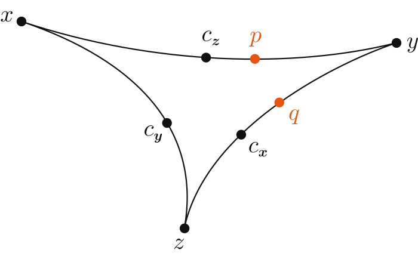
Let \(xyz\) be \(\delta\)-slim.
WLOG, suppose \(p \in [c_zy] \subseteq [xy]\), and let \(q\) correspond to \(p\) on \([c_xy]\).
By \(\delta\)-slimness of \(xyz\), \(\exists r \in [yz] \cup [xz]\) with \(d(p,r) \leq \delta\).
So we'll consider two cases: \(x\in[yz]\) and \(x\in[xz]\).
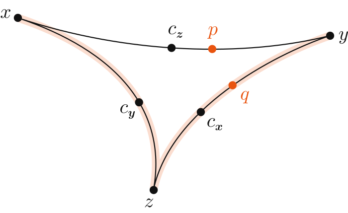
Case 1: \(r \in [yz]\), so:
\( d(r, q) = |d(r, y) - d(q, y)| = |d(r, y) - d(p, y)|\)
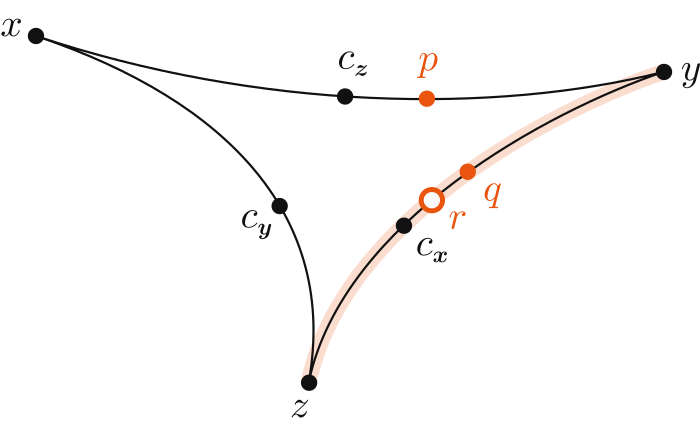
Case 1: \(r \in [yz]\), so:
\( d(r, q) = |d(r, y) - d(q, y)| = |d(r, y) - d(p, y)|\)
By the triangle inequality, we get:
\( d(p, y) - d(r, p) \leq d(r, y) \leq d(p, y) + d(r, p)\)
So we get \(d(r, q) \leq \delta\). So \(d(p, q)\leq 2\delta\).
Case 2: \(r \in [xz]\), so:
\( d(r, q) = |d(r, x) - d(q, x)| = |d(r, x) - d(p, x)|\)
Similarly, by the triangle inequality, we get:
\( d(p, x) - d(r, p) \leq d(r, x) \leq d(p, x) + d(r, p)\)
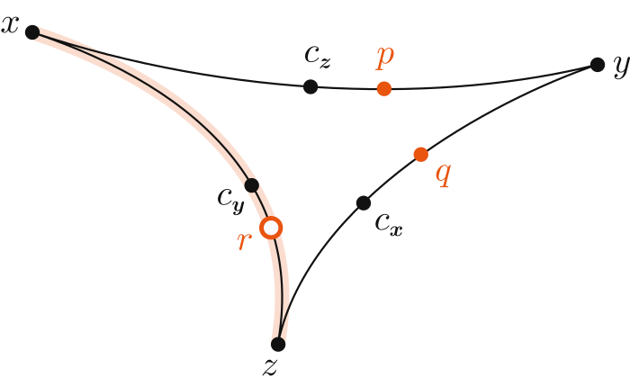
Case 2: \(r \in [xz]\), so:
\( d(r, q) = |d(r, x) - d(q, x)| = |d(r, x) - d(p, x)|\)
Similarly, by the triangle inequality, we get:
\( d(p, x) - d(r, p) \leq d(r, x) \leq d(p, x) + d(r, p) \)
So \( |d(r, x) - d(p, x)|\leq \delta \).
We define:
\( \delta_1 := d(p, x) - d_x\) \(\\ \phantom{\delta_1.} =d(p, c_z)\geq 0\) \( \\ \phantom{\delta_1.}= d_y - d(p, y)\)
\(\delta_2 := d(r, x) - d_x\) \(\\ \phantom{\delta_1.}= d_z - d(r,z) \)
\( |\delta_1 - \delta_2|\leq \delta \)
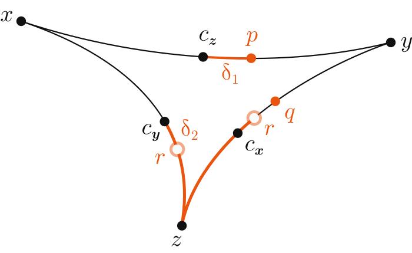
We define:
\( \delta_1 := d(p, x) - d_x\) \(\\ \phantom{\delta_1.} =d(p, c_z)\geq 0\) \( \\ \phantom{\delta_1.}= d_y - d(p, y)\)
\(\delta_2 := d(r, x) - d_x\) \(\\ \phantom{\delta_1.}= d_z - d(r,z) \)
\( |\delta_1 - \delta_2|\leq \delta \)
By the triangle inequality:
\( d(y,z) \leq d(p, y) + d(p,r) + d(r,z) \)
\( d_y + d_z \leq d_y - \delta_1 + d(p,r) + d_z - \delta_2\)
\( \implies \delta_1 + \delta_2 \leq d(p,r) \leq \delta \)
\( \delta_1 = d(p, c_z) \leq \delta\)
If \( d_y = d(c_z, y) \leq \delta \), then \(d(p, q) \leq 2\delta \) and \(d_y >\delta \).
So, we can say \(d_y ≥ \delta + \varepsilon\) for some \( \varepsilon > 0\). Let \(p'\) be the point on \([c_zy]\) at distance \(\delta + \varepsilon\) from \(c_z\) and let \(q'\) correspond to \(p'\) on \([c_xy]\).
Since \(d(p', c_z) >\delta \), Case 1 must apply to \(p'\), and hence \(d(p', q') \leq 2\delta \).
We can see \( d(q, q') = d(p, p') \leq d(c_z, p') = \delta + \varepsilon\), and so \(d(p, q) \leq 4\delta + 2\varepsilon\). Since this holds \(\forall\varepsilon>0\), we can say \(d(p, q) \leq 4\delta \). \(\blacksquare\)
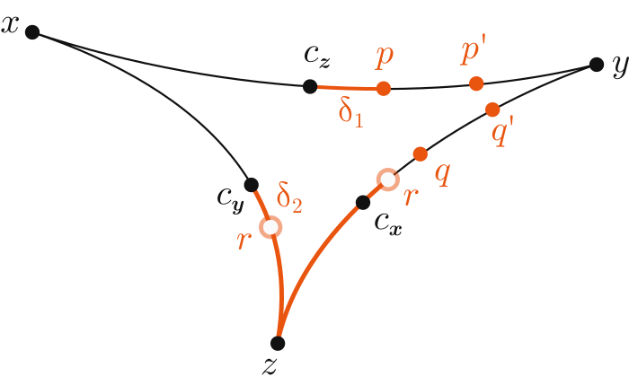
Given a base point \(w\) and some \(x,y\) in a geodesic metric space \(\Gamma\), the inner product is defined:
\( (x.y)_w = \dfrac{1}{2} \big(d(x,w) + d(w, y) - d(x, y)\big) \)
Given a base point \(w\) and some \(x,y\) in a geodesic metric space \(\Gamma\), the inner product is defined:
\( (x.y)_w = \dfrac{1}{2} \big(d(x,w) + d(w, y) - d(x, y)\big) \)
The inner product (with respect to \(w\)) is
\(\boldsymbol{\delta}\)-hyperbolic if \( \forall x, y,z \in \Gamma\):
\((x.y)_w \leq \min\{(x.z)_w, (z.y)_w\}-\delta \)
a geodesic metric space \((\Gamma,d)\) is hyperbolic if there exists a \(\delta\) such that all geodesic triangles in \(\Gamma\) are \(\delta\)-slim (or \(\delta\)-thin, for a modified \(\delta\))
a geodesic metric space \((\Gamma,d)\) is hyperbolic if there exists a \(\delta\) such that all geodesic triangles in \(\Gamma\) are \(\delta\)-slim (or \(\delta\)-thin, for a modified \(\delta\))
OR, equivalently, it has an inner product that is \(\delta\)-hyperbolic
a finitely-generated group \(G=\langle X\rangle\) is considered word-hyperbolic if its Cayley graph \(\Gamma(G,X)\) is hyperbolic with respect to the word metric (where all edges have length 1)
a finitely-generated group \(G=\langle X\rangle\) is considered word-hyperbolic if its Cayley graph \(\Gamma(G,X)\) is hyperbolic with respect to the word metric (where all edges have length 1)
invariant under change of generators
invariant under quasi-isometry (because of linear Dehn function)
if two geodesic metric spaces are quasi-isometric and one is hyperbolic, so is the other
If a group \(G\) acts geometrically (cocompactly & discretely by isometries) on a geodesic metric space \(\Gamma\). Then \(G\) is finitely generated and quasi-isometric to \(\Gamma\).
If a group \(G\) acts geometrically (cocompactly & discretely by isometries) on a geodesic metric space \(\Gamma\). Then \(G\) is finitely generated and quasi-isometric to \(\Gamma\).
Thus if \(\Gamma\) is hyperbolic, then so is \(G\).